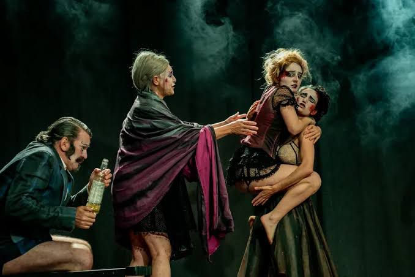

QUE CÃO VADIO É ESSE?

Vamos falar sobre o elefante na sala? Ele incomoda muita gente, mas todos fazemos de conta que ele não está ali, viramos os olhos comprimidos para os cantinhos que nos sobram, comemos os restos deixados pelo chão, mal respiramos o ar fétido de seus excrementos. Já dizia Charles Chaplin em seu discurso de O Grande Ditador: “Não sois máquinas, humanos é o que sois!”

A cada dia mais, sinto que os grandes centros – tais como São Paulo ou Rio de Janeiro – perderam o contato com um espaço de criação e pensamento teatral que tratasse temas e artistas, modos de produção e sustentabilidade, de forma a preservar nossa mais profunda humanidade. Somos cada vez mais instados a nos sentirmos parte da engrenagem (e mais uma vez citando Carlitos, como em Tempos Modernos).
Consternado, concluo que nossos espaços de criação estão comprimidos pelos afazeres da vida moderna de um artista: dublar, dar aulas, gravar audiolivros, fazer treinamentos empresariais, participar de eventos corporativos e, se sobrar tempo, ensaiar uma peça aqui e ali, com pouco tempo para reflexão e burilamento. Somos um imenso coletivo de PJs empinando e equilibrando, como um palhaço de circo, os pires da nossa sobrevivência. Tudo isso, em centros urbanos em que se leva minimamente 40 minutos de deslocamento de ‘um trampo a outro’.
Saí do Teatro Estúdio no último domingo com todas essas reflexões na cachola depois de ver deliciado a prática de um ofício que eu julgava desaparecido: o fazer teatral a partir de inquietações dos artistas ali presentes. A presencialidade da performance com o devido ilusionismo, mas sem aparatos e artefatos para além do estritamente necessário. Nem ‘mínimo’ e muito menos ‘pobre’ como alguns tentam rotular iniciativas da essencialidade artística – ainda que esses adjetivos (mínimo e pobre) nada tenham de demérito em suas acepções. Falo do instigante, misterioso, poético e inquieto Cão Vadio, da Trupe Ave Lola, de Curitiba. Olho neles!
“Hoje tem espetáculo? Tem, sim Senhor!” E como eu amo essa palavra – espetáculo! Tão depauperada pela ideia canhestra e colonialista de ‘show’. Cão Vadio é um espetáculo que traz em seu bojo um olhar para dentro de nós, de quem somos como país ainda mal recuperado dos golpes da Ditadura Militar, lambendo as feridas dos anos Bolsonaro e diante do pavor crescente do avanço das direitas no mundo. Um espetáculo que se entende latino e, por isso, múltiplo. E nos faz olhar para a América Hispânica de Marques, Borges e Llosa. E assim, por sermos múltiplos, o resultado é de múltiplas linguagens. Estão ali o canto, a dança, o circo, a acrobacia, a manipulação de bonecos, o drama, a comédia, a tragédia, o cabaré (e fico lembrando do impacto que foi assistir este ano o Cabaré Coragem do Grupo Galpão – também múltiplo e igualmente fora do tal eixo Rio-SP). E por que somos múltiplos também como nação, cada um de nós acaba se identificando ao menos com um dado dessa narrativa que nos relembra muito de Felinni, Glauber, David Lynch, Pirandello. O insólito amalgamando velhos boleros cantados acusticamente (como é bom ouvir teatro sem a interface assustadora da amplificação), performances corporais de tirar o fôlego, ecos da Commedia Dell’Arte e do melodrama de circo; palcos, picadeiros e tablados.
O sentido de coletividade é tão presente nesta construção de dramaturgia e direção de Ana Rosa Genari Tezza – dona de uma alegria e paixão pelo teatro que salta aos olhos e ecoa nos ouvidos –, que fica quase impossível destacar nomes. Tudo é altamente elogiável e digno de nota (elenco, figurinos, maquiagem, construção e manipulação de bonecos, direção musical – quando for, leia o lindo programa da peça com atenção). Todos os nomes formam um coletivo que afina com afinco o tom do uivo e do grito desesperado e esperançoso deste Cão Vadio.
Mas afinal, que cão vadio é esse? Que vira-lata, que cão de guarda, que cão-guia para cegos, que lobo solitário, que matilha é essa? Como diria Chico Buarque, “Nem assaz alhures e antanho”, este Cão Vadio é mais um onde do que um quem. É talvez um quando. Uma franja de tempo e espaço, um refúgio e um exílio. É o que já foi e o que o talvez nunca chegue a vir. A utopia que se persegue ao mesmo tempo da qual se foge. É Godot, Horácio, Erêndira, Hamlet, Yorick. É o teatro que alguns ainda logram fazer no Brasil, se equilibrando numa escada invertida.
Corra pra ver. Pague o que puder.
E toca o baile!